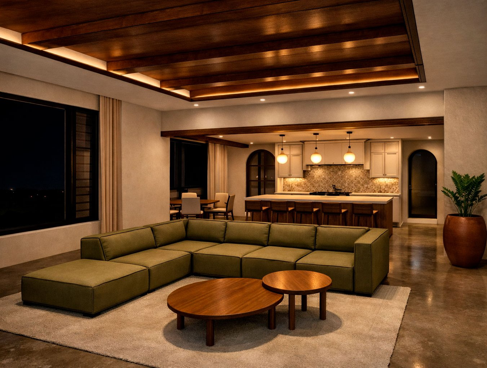
Ver proyectoDoña Victoria
El nombre viene de lo victoriano. Sala, comedor y cocina bajo un cielo de vigas de madera con luz indirecta, y vanos en arco hacia el resto de la casa.

Ver proyectoEl nombre viene de lo victoriano. Sala, comedor y cocina bajo un cielo de vigas de madera con luz indirecta, y vanos en arco hacia el resto de la casa.
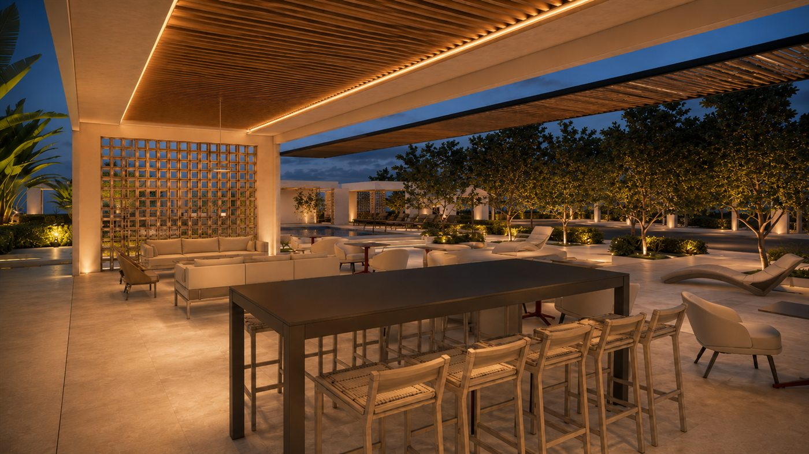
Ver proyectoRenovación del área recreativa de Las Villas Paraíso: plataformas más amplias alrededor de las piscinas, rancho social, duchas entre la vegetación y tres espacios de descanso privado.
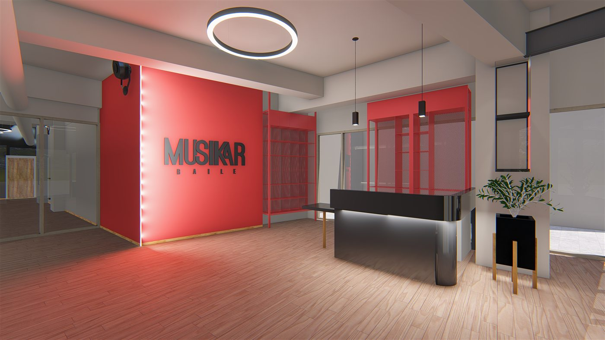
Ver proyectoConceptualización de un local comercial para que el propietario viera la estética y los colores del espacio: muro rojo con el logo iluminado, mostrador negro y piso de madera.
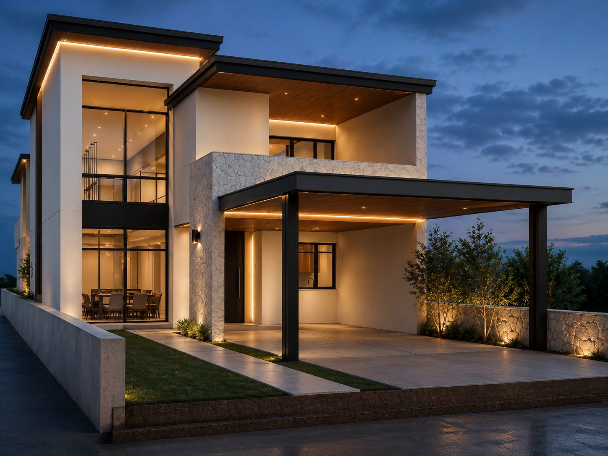
Ver proyectoCasa de dos niveles con la sala y el comedor en doble altura, abiertos a un patio con árboles. Arriba, dos dormitorios, un área de cowork y dos terrazas.
 Ver proyecto
Ver proyectoUn techo cóncavo que contrasta con los techos convexos de las casas vecinas, para no imponerse en la transición entre el centro y los barrios al norte de la línea del tren. Certificada LEED v4 NC Gold, con 60 puntos.
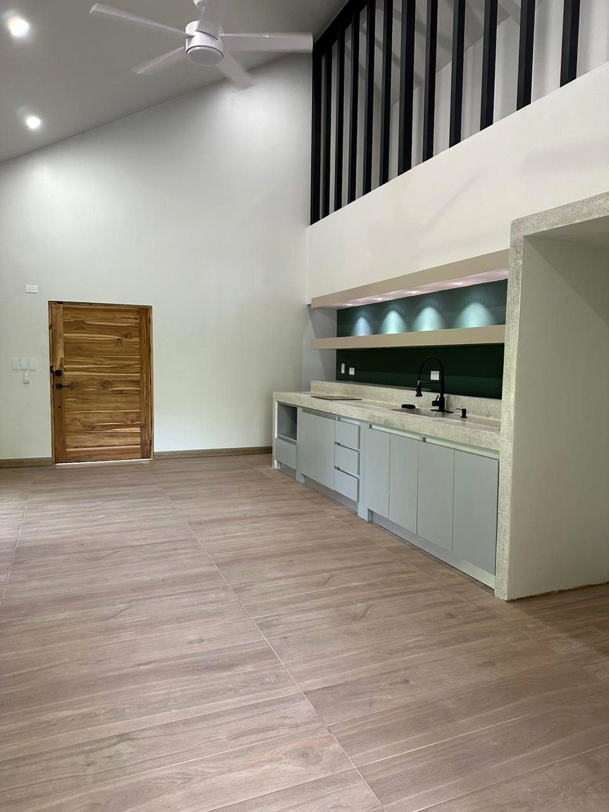
VerPaquera, Puntarenas. Casa para un adulto soltero y su papá. Tiene dos habitaciones, cocina y comedor integrados, dos baños y cuarto de pilas en la parte posterior. La terraza funciona como zona social, con parrilla, y hay cochera para un vehículo. Terminada en diciembre de 2023.
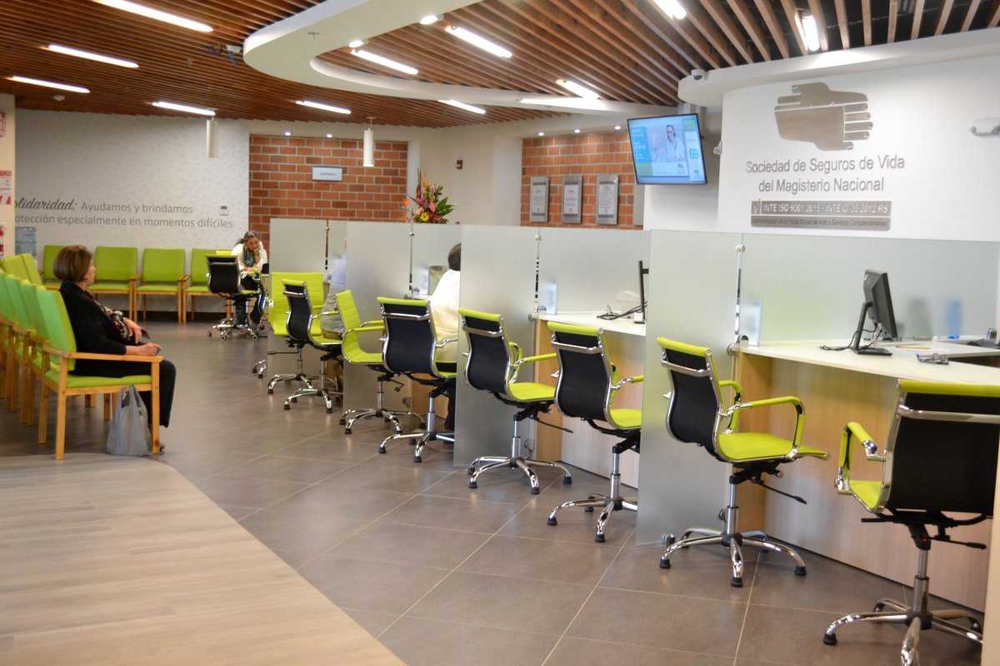
Ver proyectoLadrillo para dar color y textura en la trama urbana, y un techo que se percibe liviano frente a la pesadez que suele tener lo institucional.
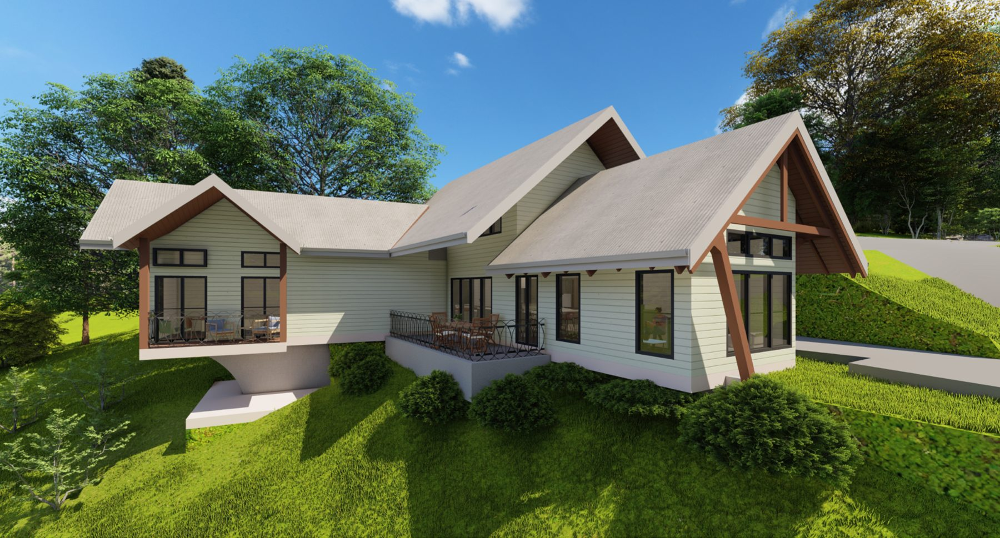
Ver proyectoLlano Bonito de Naranjo. Casa de retiro para una pareja adulta con muchos nietos, en un lote de varias hectáreas. Áreas comunes amplias, una sala con ventanales hacia el paisaje y varias terrazas al aire libre.
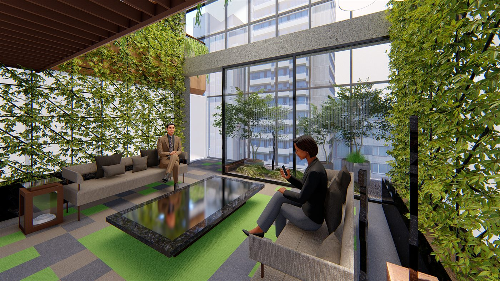
Ver proyectoSala de espera para gerencia y junta directiva. Un espacio de contemplación con carácter de jardín japonés.
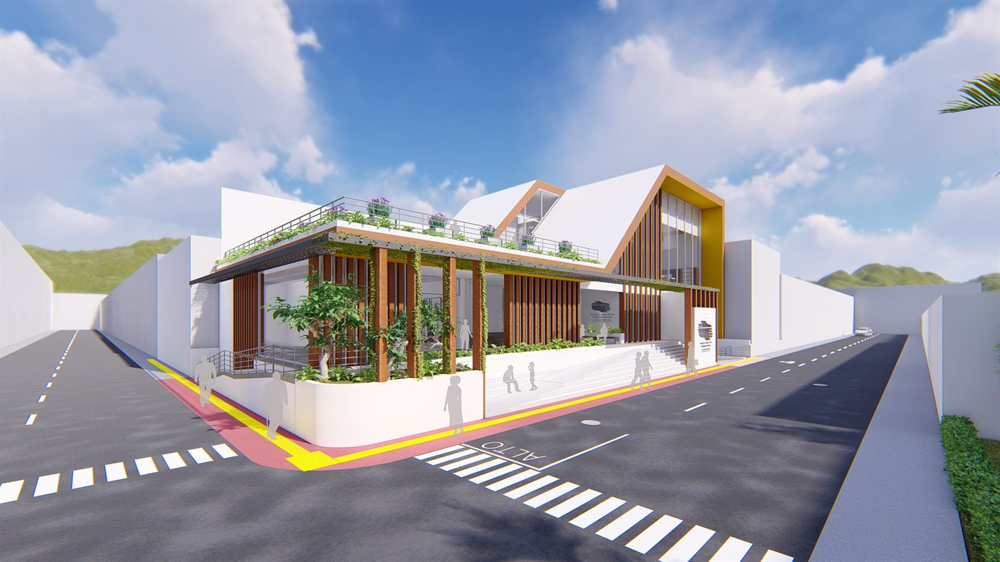
Ver proyectoPropuesta para licitación. El análisis de sitio se hizo a tres escalas, para entender cómo funcionaría el edificio en la ciudad.
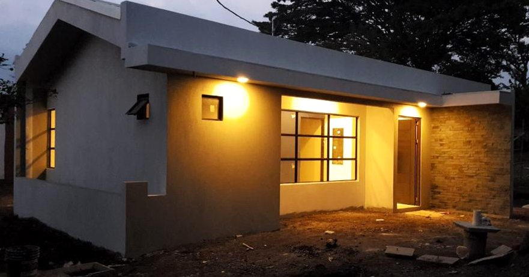
Ver proyectoHeredia. Casa para una pareja joven con un hijo. Tiene dos habitaciones, sala, cocina y comedor integrados, un baño, cuarto de pilas en la parte posterior, espacio para un vehículo y área de barbacoa. La distribución deja previsto el crecimiento de la familia. Terminada en diciembre de 2018.
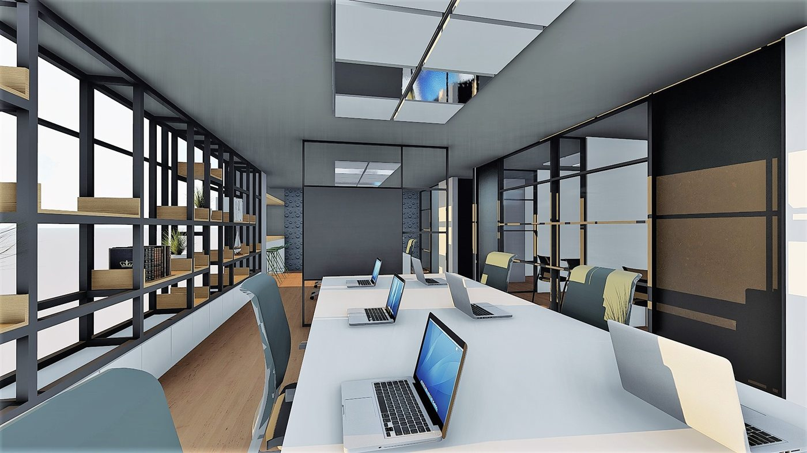
Ver proyectoLa ventanería es la entrada principal de luz; la distribución se organiza a partir de ella para depender lo menos posible de las luminarias.